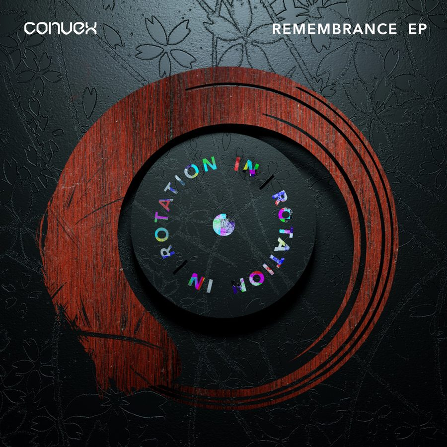

Convex Readies an Explosive Fusion of Melody and Bass on ‘Remembrance’ EP for IN / ROTATION


Convex is L.A. native Zack Morgan, a DJ/producer and live performer who has already mastered an impressively polished sound, a dazzling mix of melodic festival energy, and tougher, more bass-focused broken beats and trap grooves. It’s a concoction that has been showcased to full effect on his new Remembrance EP, which arrives today on IN / ROTATION.
“This year, I wrote more music and had more releases than ever, and my new EP is a direct result of all this work,” he tells Insomniac.
Composed of three huge tracks that are all packed with thundering trap beats and sparkling, trancey melodies, the EP boasts a huge amount of studio polish, as well as a sophisticated approach to songwriting and arrangements that reflects Zack’s extensive history as a guitar player before he embraced electronic music.
To mark the release of the Remembrance EP on IN / ROTATION this week, we’re speaking to Convex about music, festivals, and what he describes as “the best, most difficult year of my life.”
Convex’s Remembrance EP is available here.
This year was tipped to be a big one for you. How has 2017 played out?
I was really excited in January, when I signed with a new management company and agency who promised me the moon. It ended up not working out. You might think I’d be totally bummed, but honestly, it taught me an incredibly valuable lesson: No matter what, I am ultimately responsible for representing myself, because I love what I am doing, and no one is going to care more about my career than me.
So, I went out and reconnected with the awesome people I’ve met in the industry, and handled my own shows and releases. I ended up playing more Insomniac shows than ever before and was invited to play two sets at EDC Las Vegas and Nocturnal—that right there makes 2017 a huge success. But I also wrote more music and had more releases than ever, and my new EP is a direct result of all this work. It turned out to be a really good year, despite the hardship. So, if you’re new and struggling as an artist, don’t give up, keep going, and take charge of your career.
Tell us a bit about putting this EP together.
“Dainichi” is something I’ve rewritten maybe a thousand times over; it just wasn’t quite there for me. But I kept thinking about it and finally heard this traditional Japanese lullaby melody that made it all come together perfectly. I love this track, because it’s so different for me and so different from a lot of the music I’m hearing lately.
The second song, “All We Need,” is probably the most in-your-face mix of genres on the EP, with half being future bass and half being hybrid trap. The final track, “You Never,” is about how we never know when positive or negative experiences will happen to us. It’s up to us to take a leap of faith about what we’re doing, and just trust that things will work out for the best.
An interesting part of your story is that you’ve transitioned from a lifelong focus as a guitarist into an electronic music producer. Tell us how that transition took place.
I still play guitar pretty much every day. Obviously, in terms of technique, guitar and DJing are completely different, but everything else, especially producing, relies on the same music fundamentals. My guitar background really informs my songwriting.
I never expected to be producing dance music. It was simply a natural evolution of finding the musical landscape shifting away from bands. I thought I’d be playing in a band at UCSB, but there weren’t that many around. It was all DJs, so I was intrigued and thought, “Well, let’s see what this is all about.” It’s been incredibly fun and enjoyable.
Winning the Insomniac Discovery Project a few years ago helped put you on the map. Tell us about the sorts of gigs and experiences you’ve been having since then.
Discovery Project was completely mindblowing. I won for EDC Las Vegas, and I remember just being amazed at how big the crowds were. What’s so cool is, Insomniac treats you like a huge artist, even if you’re just starting your career. The experience really gave me a huge boost of confidence, and I knew this was a huge opportunity to build upon. So, I worked 16 hours a day, getting better as a producer. After EDC, Insomniac called and invited me to play Escape, which was super fun, as I love playing live. It is really rewarding to see the fans, because as a producer, you spend so much of your time alone in a studio. So, playing these shows and making sure people have a great time is really important to me.
Every audience deserves a unique experience, so I never play the same set twice. After Escape, I played Nocturnal Wonderland and Countdown NYE (which was my favorite show to date) and then this year, I played two shows at EDC Vegas. It was like a homecoming of sorts.
Was it a challenge moving quickly into the festival space in the way you did?
Playing guitar onstage and DJing at a festival are extremely similar skill sets. Both make me incredibly nervous right before going out—it’s always been like that, since I started performing showcases in L.A. when I was younger. I guess that’s how I get energized, because while I feel super anxious, as soon as I get onstage, I get this really intense focus on playing my best. I genuinely want the audience to have as good a time as I am having.
I think the most challenging thing was being my own hype man and getting on the mic more. I think most people would consider me a pretty low-key and quiet guy, so bringing the energy—not only in the music, but also in my voice and performance—represented a change.
What else is coming up for you?
Eating lots of turkey, for now. Thanksgiving is my favorite holiday, so I’m about to get fat on some stuffing. 2017 was hard, and it tested me. I think I’m going to recharge and do some surfing or snowboarding this winter. My new team is planning 2018 as we speak, and I am writing and recording with some incredible artists, so there will be a ton of new Convex music coming out. Definitely looking forward to playing some more Insomniac shows and partying with everyone that has caught a vibe with me, as well. Things are looking good for next year. 🙂
Follow Convex on Facebook | Twitter | SoundCloud
Follow IN / ROTATION on Facebook | Twitter | SoundCloud